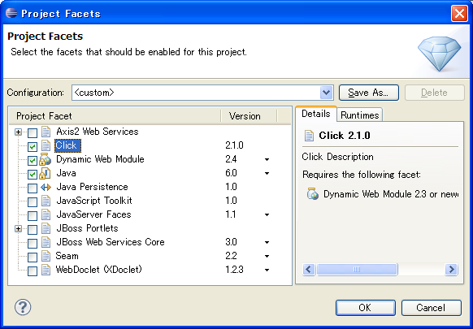
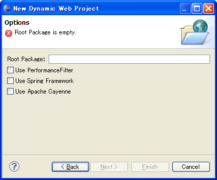
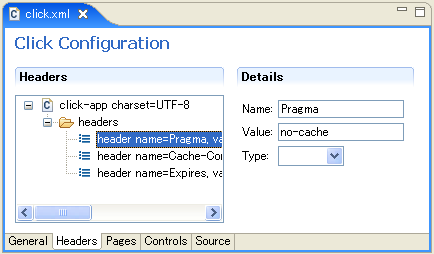
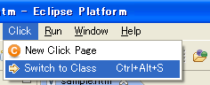
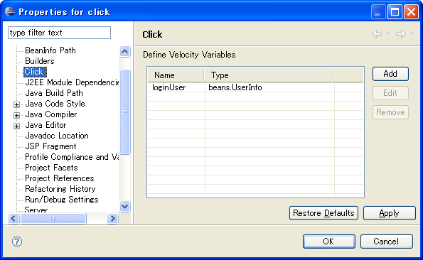
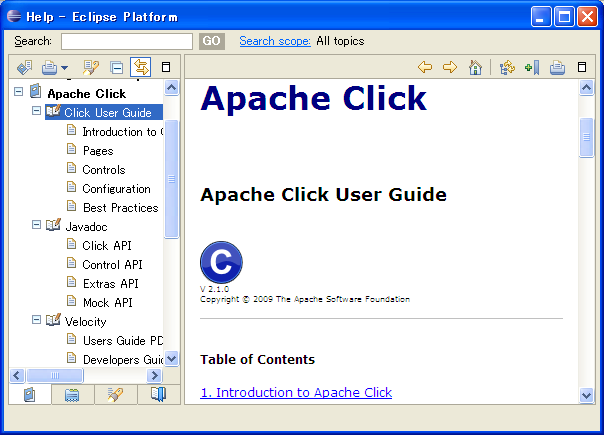
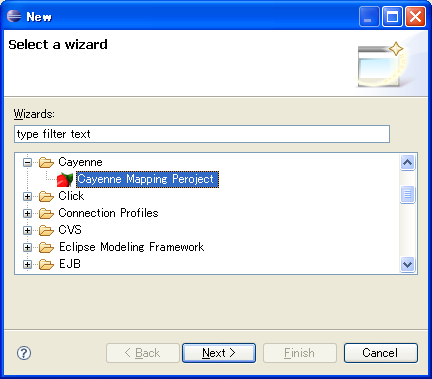
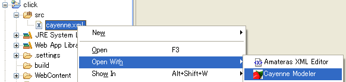

ClickIDE 2.x requires Eclipse 3.3.x and WTP 2.0.x.
The easiest way to use ClickIDE is installing Eclipse IDE for Java EE Developers and get ClickIDE from the SF.net download page. Unzip clickide-x.x.x.zip and put 2 folders (plugins/ and features/) into your ECLIPSE_HOME.
Create "Dynamic Web Project" in the J2EE perspective and select "Click" as Project Facet. The project creation wizard will add Click JARs, web.xml and template of click.xml into your project.

You can also add Spring and Cayenne support to your project in this wizard. If Spring or Cayenne option are checked, the project creation wizard adds required JAR files to WEB-INF/lib and configures web.xml as well.

ClickIDE provides the visual editor for the Click configuration file (click.xml). It has some tabs. You can edit click.xml using this editor easily.

In the "Source" tab of the configuration file editor, you can edit click.xml directly and you can jump to the source code of the page class and the page template by CTRL+CLICK. ClickIDE also provides the validation for click.xml. Error markers are displayed in the editor and "Problems" view.
You can create the page class and the page template file using the page creation wizard. In the wizard, you can choose template for the page class and the html file. These template can be configured at the preference dialog ("Window" > "Preferences" > "Click").

ClickIDE also provides the Velocity template editor. This editor provides code-completion, highlighting and validation as velocity syntax. You can also configure highlighting colors in the preference dialog.

In the JDT's Java editor and the Velocity template editor, you can switch between the page class and the html file by CTRL+ALT+S or from menubar "Click" > "Switch to Class (HTML)"

You can register your own variables that would be used in the Velocity templates in the project property page. Registered variables are available in the code-completion.

Click documentation is integrated with the Eclipse help system.

ClickIDE also support Apache Cayenne since ClickIDE 2.0.0.
You can create new Cayenne mapping project using the New Cayenne Mapping Project wizard.

This wizard generates an empty cayenne.xml and open it by Cayenne Modeler. If you have an existing cayenne.xml, you can open it by Cayenne Modeler from the context menu. See below:

ClickIDE also provides classpath variables "CAYENNE_LIB" and "CAYENNE_NODEPS_LIB". You can add cayenne.jar or cayenne-nodeps.jar to your project classpath using these variables at the project build path settings.
Note: If your project is WTP dynamic web project, you should add these variables at the J2EE Module Dependencies page in your project properties dialog because this setting is applied to deploying and exporting as a war file.